Eritema pigmentar fixo ou erupção fixa medicamentosa (fixed drug eruption, em inglês) é forma freqüente de erupção por droga, caracterizando-se por mancha eritematopigmentar, redonda ou oval, bem delimitada, que recidiva sempre no mesmo local, mesmo que apareçam novas lesões simultaneamente em outras áreas.
Etiopatogenia
É uma resposta do tipo IV mediada por linfócitos T CD8+, que desencadeiam inflamação e dano às camadas da pele (epiderme e derme) após reconhecerem o medicamento como antígeno. Sabe-se que qualquer droga pode causar eritema fixo. Já foram documentadas mais de 100 drogas, porém os principais responsáveis são:
o Antibióticos: Sulfametoxazol-trimetoprima (Bactrim), tetraciclinas, penicilinas, quinolonas.
o Anti-inflamatórios não esteroidais (AINEs): Ibuprofeno, naproxeno, ácido mefenâmico.
o Analgésicos: Paracetamol, dipirona.
o Outros: Anticonvulsivantes (carbamazepina), alopurinol, contraceptivos orais.
• Casos raros: Alimentos (castanha de caju, morango), corantes, contraste iodado e vacinas.
Manifestações clínicas
Caracteriza-se por lesão macular de coloração eritematoarroxeada, geralmente arredondada, com limites nítidos, medindo alguns centímetros de diâmetro. A lesão pode ser purpúrica, urticada ou bolhosa nos quadros mais severos. Gradualmente, o eritema esmaece, aparecendo pigmentação melânica acastanhada, que desaparece no período de algumas semanas. Há sintomas de prurido e sensação de queimor. A intensidade do quadro depende da frequência de ingestão da droga. Quando ocorrem sucessivas exposições, a pigmentação pode tornar-se permanente e surgirem novas lesões em outras áreas. A presença de numerosas lesões é referida como eritema pigmentar fixo generalizado e pode ser difícil diferenciá-lo do eritema polimorfo. Ainda que possam aparecer em qualquer parte, palmas, plantas e mucosas são as regiões mais acometidas. A forma linear é uma variante rara que deve ser diferenciada do líquen plano linear. Temos ainda as variantes:
o Generalizada bolhosa: Bolhas extensas, mas com áreas de pele sã entre elas, podendo ser confundida com síndrome de Stevens-Johnson (porém sem sintomas sistêmicos graves).
o Mucosa: Lesões erosivas ou ulceradas na boca ou genitália.
Elemento importante para o diagnóstico é a recidiva da lesão, no mesmo local, após reexposição à droga responsável, devendo ser feita investigação minuciosa com o paciente para descoberta e exclusão do agente desencadeante. Às vezes, longo período decorre, com surtos repetidos, para que seja elucidado o agente causal.
Diagnóstico
• Clínico: História de recorrência no mesmo local após uso de medicamento.
• Exames complementares:
o Biópsia cutânea: Revela dermatite de interface com apoptose de queratinócitos e melanófagos na derme.
o Teste de contato: Aplicação do medicamento suspeito na área lesionada para observar reação.
Diagnóstico diferencial
• Herpes simplex: Lesões vesiculares agrupadas (diferem pela ausência de hiperpigmentação).
• Eritema multiforme: Lesões em "alvo" e envolvimento sistêmico.
• Síndrome de Stevens-Johnson: Acometimento mucocutâneo extenso com sintomas sistêmicos graves.
Tratamento e prevenção
• Suspensão do medicamento: Eliminar o agente causador é essencial para evitar recorrências.
• Terapia sintomática:
o Corticoides tópicos: Reduzem inflamação e sintomas locais (ex.: creme de betametasona).
o Anti-histamínicos orais: Controlam a coceira.
• Casos graves: Internação para hidratação e cuidados com lesões bolhosas, semelhante ao manejo de queimaduras.
Complicações e prognóstico
• Hiperpigmentação residual: Pode persistir por meses ou anos, principalmente em pessoas com pele mais escura.
• Risco de mortalidade: Na forma generalizada bolhosa, a taxa chega a 20% devido a infecções ou desequilíbrios hidroeletrolíticos.
• Prevenção: Evitar reexposição ao medicamento e orientar o paciente a manter um registro de medicamentos utilizados
REFERÊNCIAS BIBLIOGRÁFICAS
1. Fixed Drug Eruptions: An Update, Emphasizing the Potentially Lethal Generalized Bullous Fixed Drug Eruption. Patel S, John AM, Handler MZ, Schwartz RA.Am J Clin Dermatol. 2020 Jun;21(3):393-399.
2. Fixed drug eruption from atezolizumab. Kearns D, Gardner JT, Kerstetter J, Furukawa B.Dermatol Online J. 2022 Jan 15;28(1).
3. Multifocal Bullous Fixed Drug Eruption. Oliveira C, Rodrigues MA, Cunha Velho G.Acta Med Port. 2023 May 2;36(5):361-362.
4. Fixed Drug Eruption on the Tongue Due to Naproxen. Ferreira C, Corrales T, Guilherme A.J Investig Allergol Clin Immunol. 2020;30(5):358-359.
5. Fixed Drug Eruption due to Dupilumab. Kaneoka A, Saito-Sasaki N, Sakuragi Y, Sawada Y.Acta Derm Venereol. 2024 Apr 20;104:adv37804.
Atlas de imagens 19

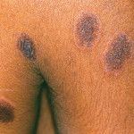


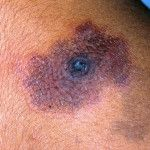

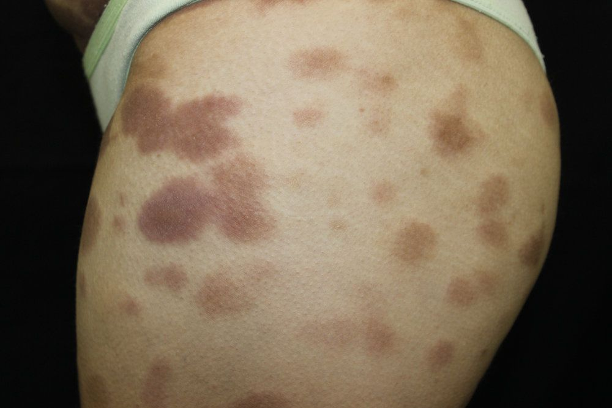

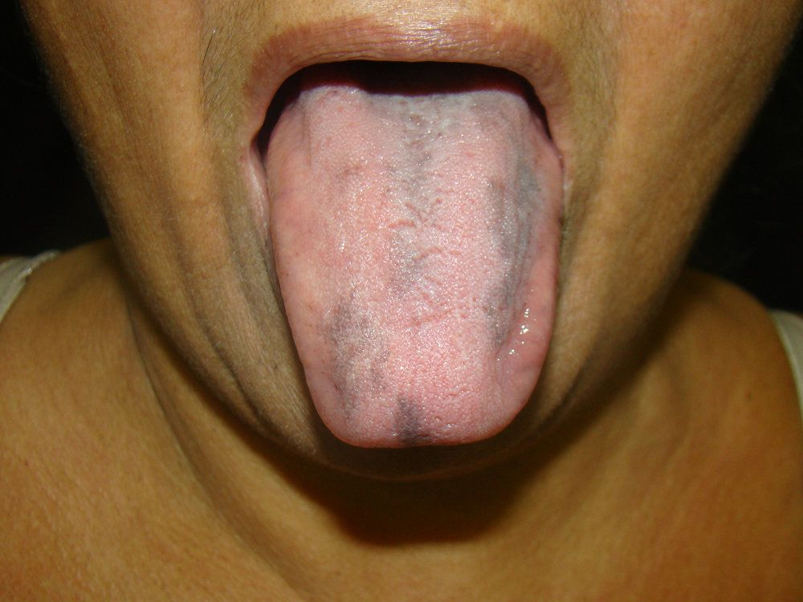

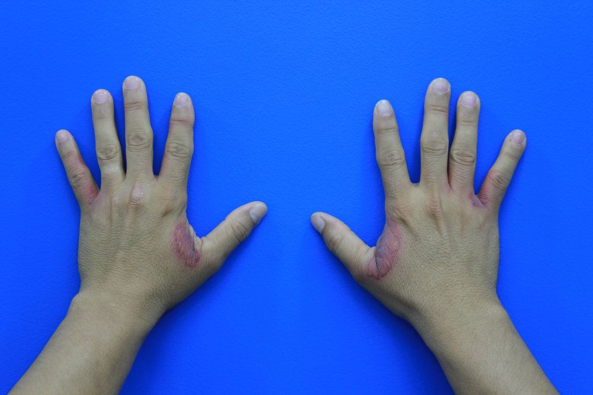

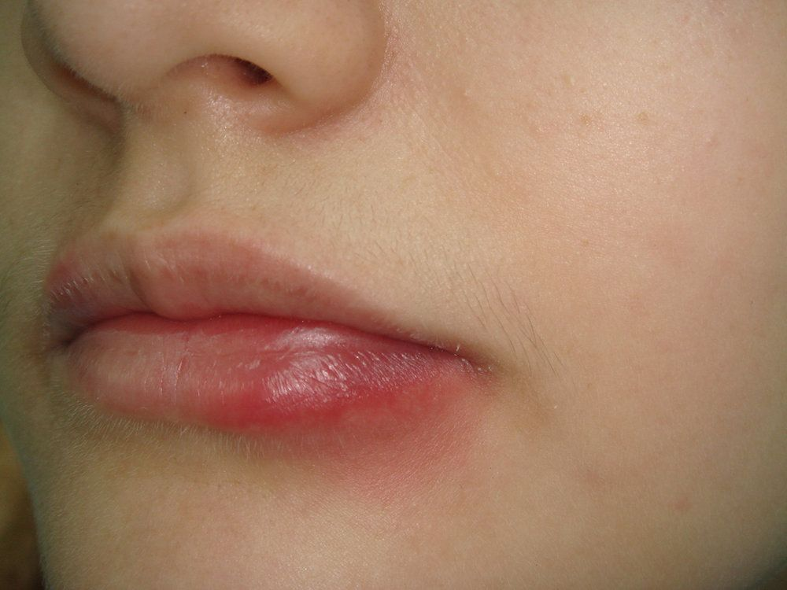

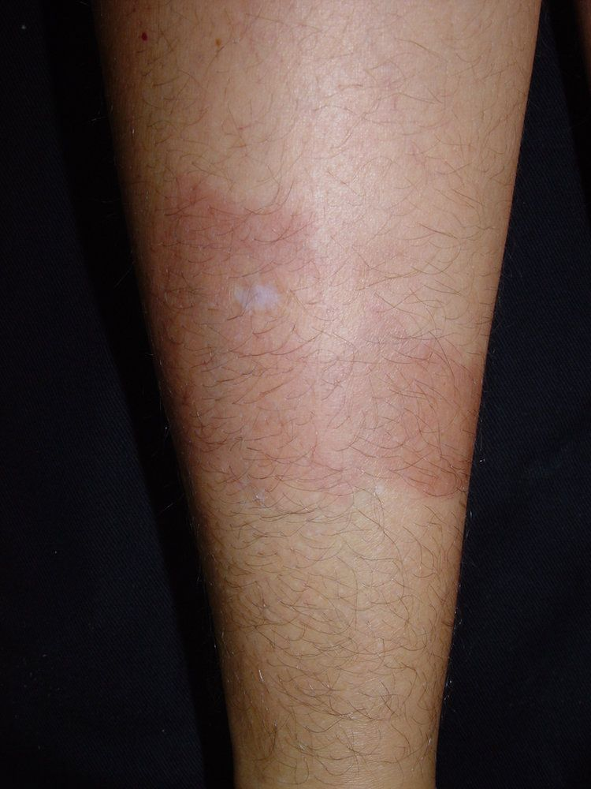

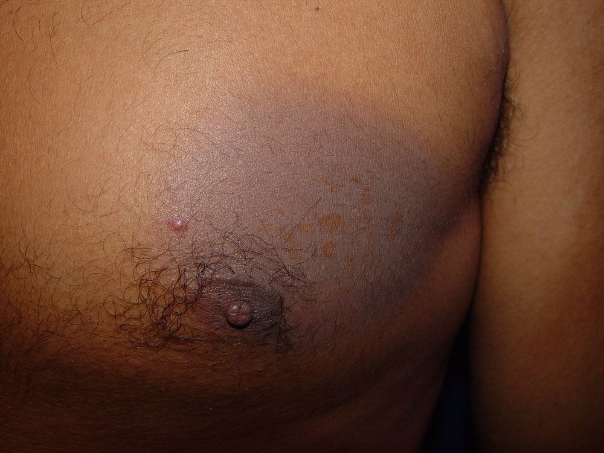

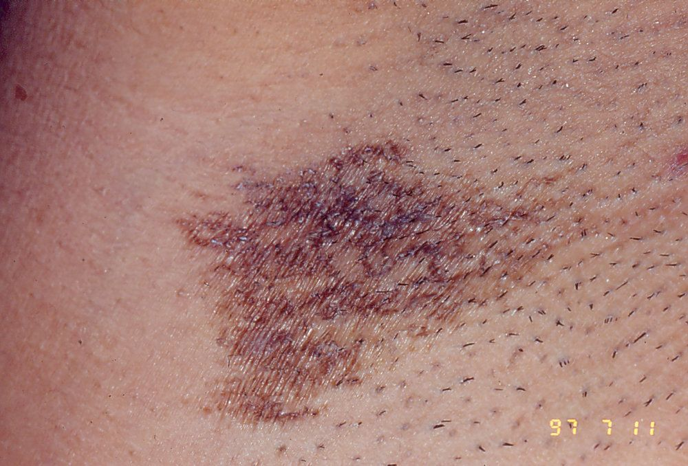

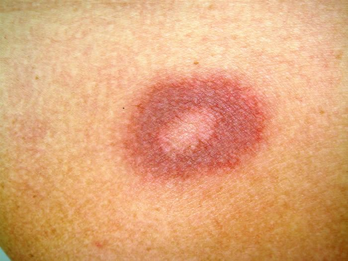

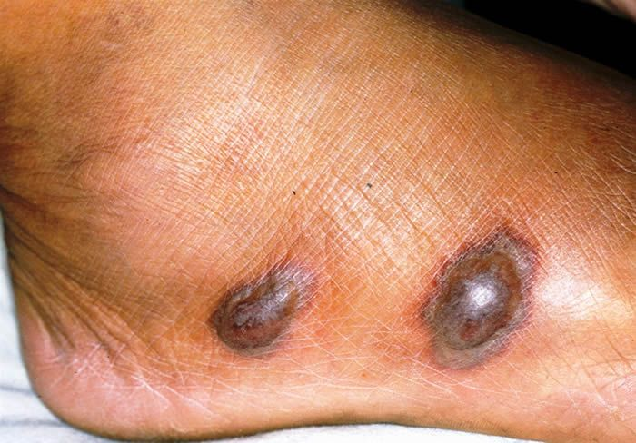

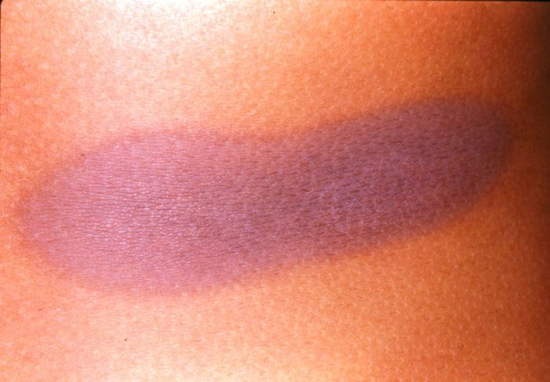

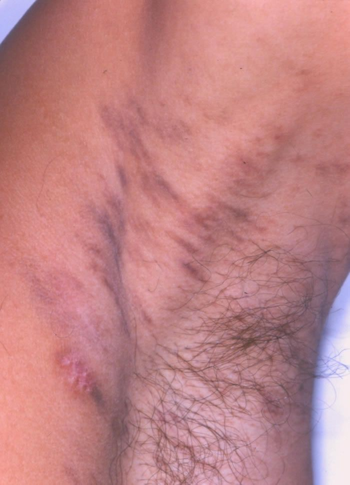

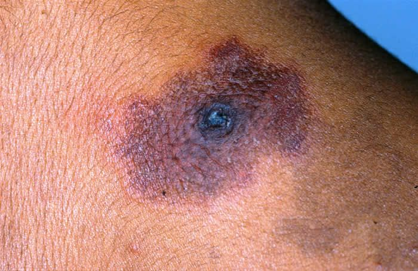

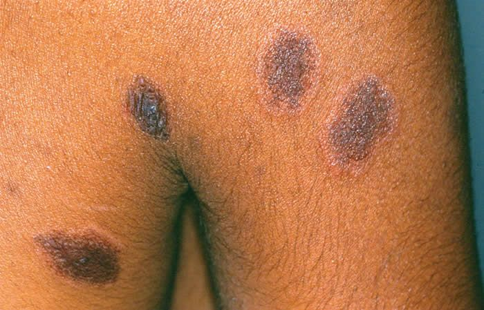

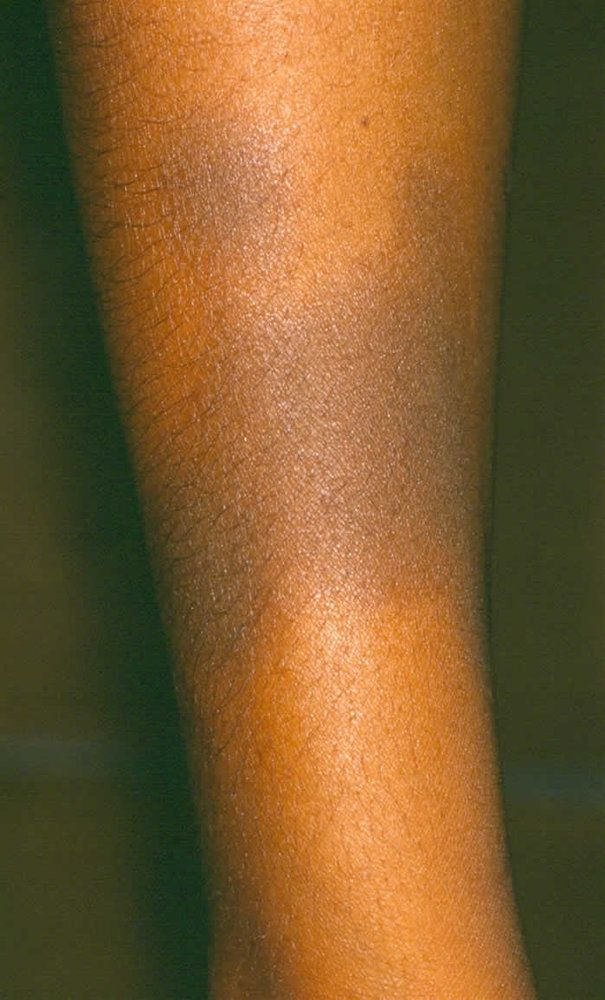

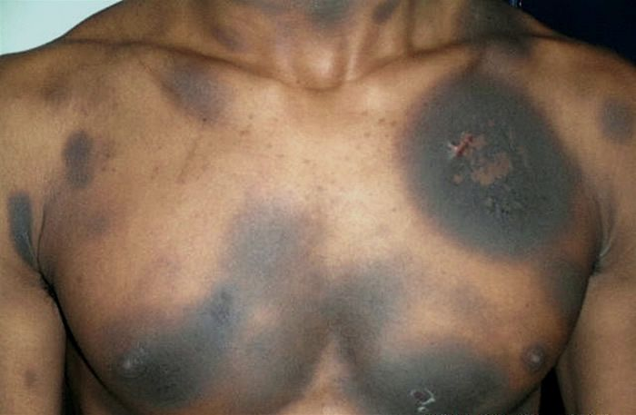

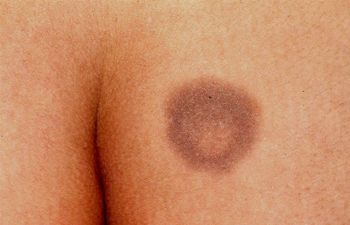
Na Skin Prime
Como podemos ajudar
Entre os recursos citados para Eritema Fixo Medicamentoso, estes estão disponíveis na clínica:
Diagnóstico